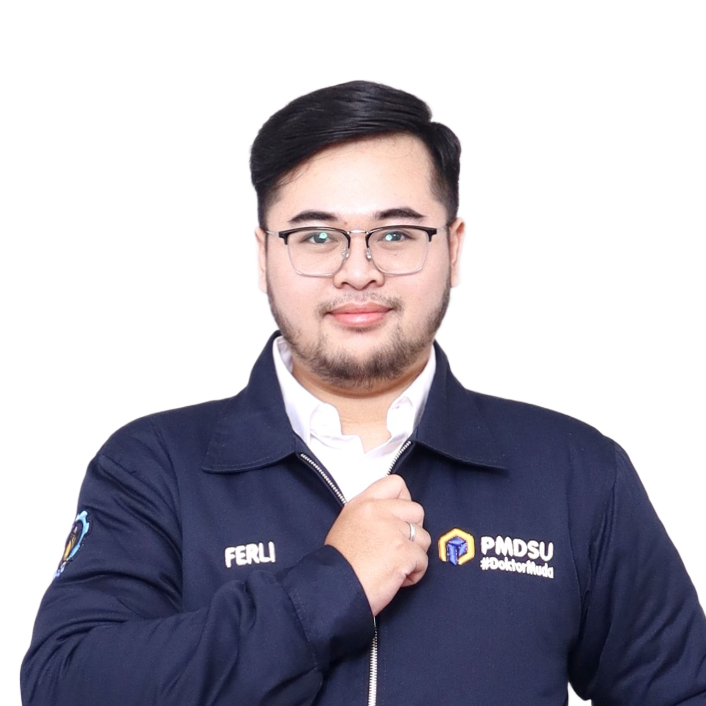

AI Researcher
Master's-Doctoral Candidate at ITS specializing in Data Science, AI, and Computer Vision. Proficient in Python, R, PyTorch, and TensorFlow. A highly adaptable fast learner with strong leadership and teamwork skills, proven through various technical competitions and organizational experiences.
PMDSU Scholarship Awardee specializing in Medical AI.
2nd highest academic ranking among faculty graduates.
Member (CIS, SPS, Young Professionals)
May 2026 – Present
Chairman
Jan 2026 – Present
Chairman
Jan 2023 – Jan 2024
Indonesian Delegate (SDGs)
Aug 2021 – Nov 2022
Over 30 Events
Jan 2022 – May 2024